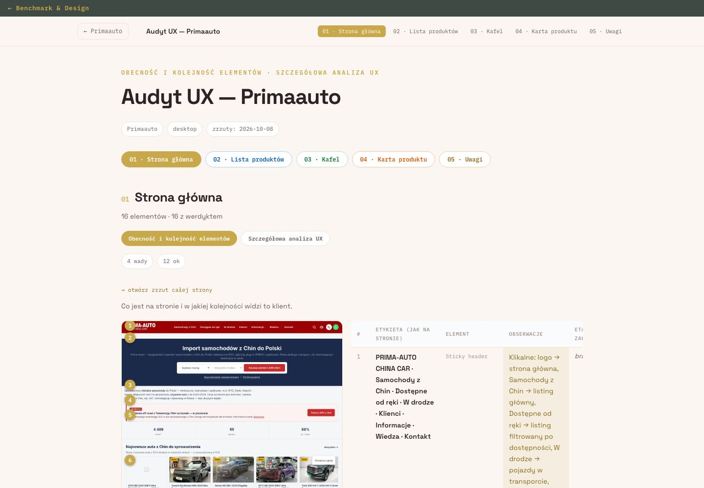
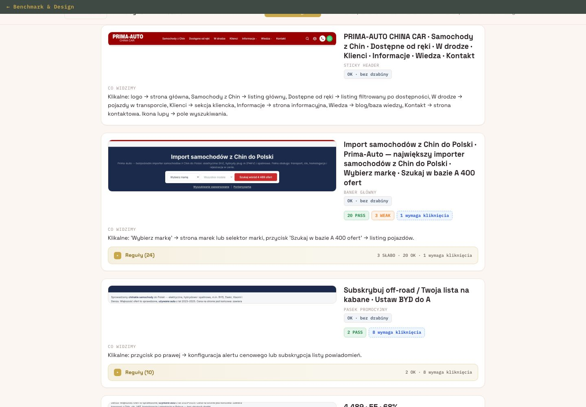
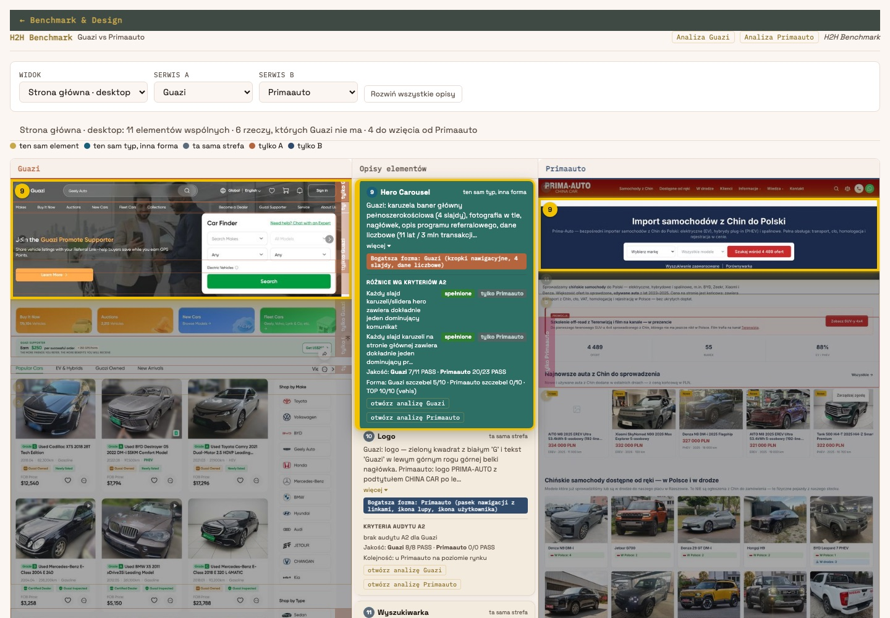
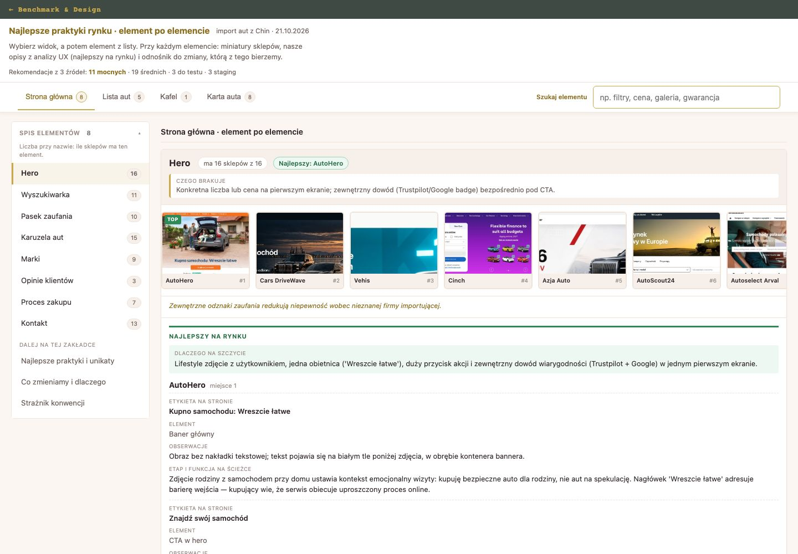
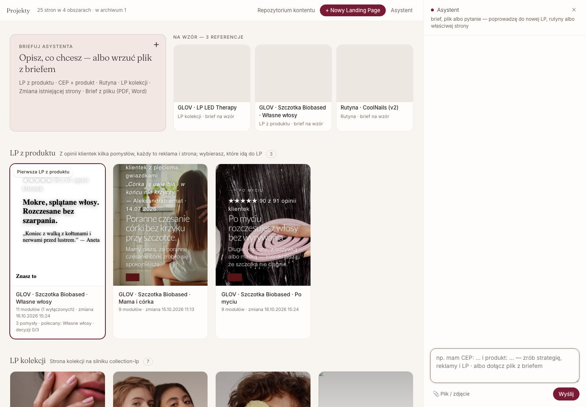
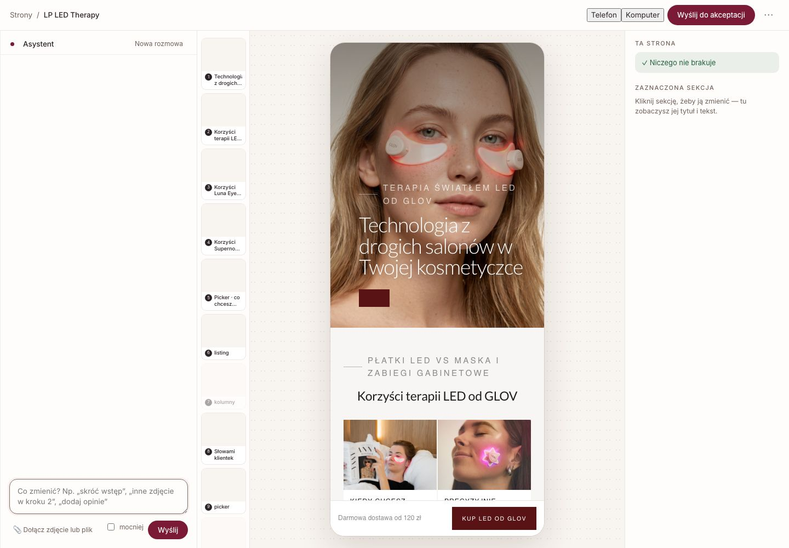

211
pomysłów do sprawdzeniaco 2 h
raport na żywo — otwórzCo robię
mierzęMission Controlleady, telefony, czat i — z BDC — sprzedaż w jednym raporcie, codzienny mail z wynikami, pilnowanie pomiaru
poprawiamUX i LP makerstrony modeli i zmiany na stronie, budowane i wdrażane przeze mnie
sprawdzamTesty A/Bcztery testy miesięcznie, wynik w raporcie
Jak to wygląda
Ekrany z bieżących projektów (benchmark: serwisy z autami, LP maker: sklep kosmetyczny). Dla Plichty te same narzędzia na stronach Audi i dealerów konkurencyjnych marek. Kliknięcie otwiera pełny rozmiar.






Cena
Jednorazowo · start
Przygotowanie w pierwszym miesiącu: narzędzia, dane i plan testów, na których stoi dalsza praca.
Budowa setupu Mission Control · tydzień 1–4
| 5 600 zł |
Benchmark kategorii · tydzień 2–3
| 2 000 zł |
Baza hipotez do testów A/B · tydzień 2
| 1 000 zł |
Budowa LP makera · tydzień 2–4
| 3 500 zł |
| Razem | 12 100 zł |
Co miesiąc
Stała praca nad stroną i danymi: pilnuję pomiaru, testuję i buduję strony.
Nadzór nad Mission Control, aktualizacje i rozwój · co tydzień i co miesiąc
| 1 200 zł |
Testy UX i A/B · 4 testy miesięcznie
| 1 600 zł |
LP maker · do 2 stron miesięcznie
| 700 zł |
| Razem | 3 500 zł |
Kwoty netto. Opcja: widoczność w odpowiedziach AI i lokalne SEO razem z Imoogi — wycena osobno.
Założenia
- Umowa na 6 miesięcy, przegląd wyników po 3.
- Wdrożenia robię sam: LP na subdomenie, zmiany przez WordPress i GTM.
- Plichta: akceptacja zmian w 3 dni robocze, statusy leadów z BDC raz w tygodniu.
- Kampanie prowadzi Pimedia według wspólnej konwencji nazw. Budżet mediowy poza ofertą.
Październik 2026 · liczby z raportu GA4 Audi Grupa Plichta.